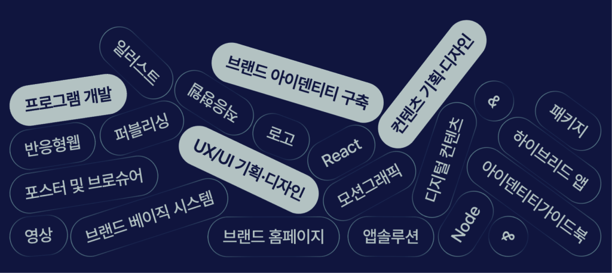
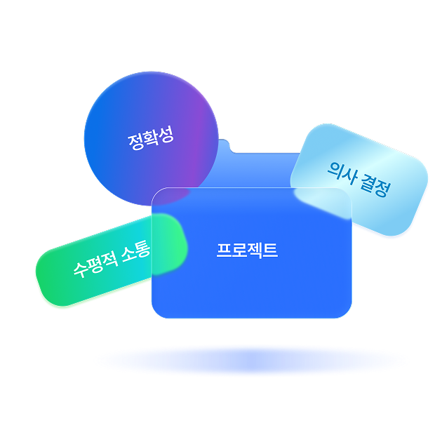
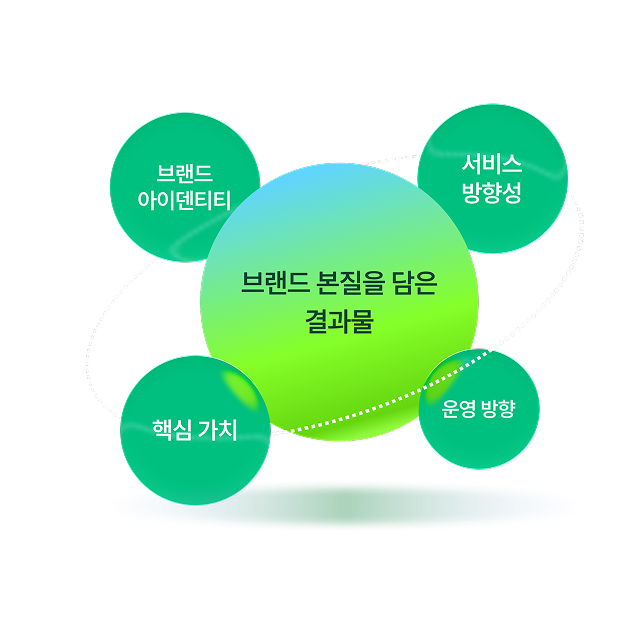
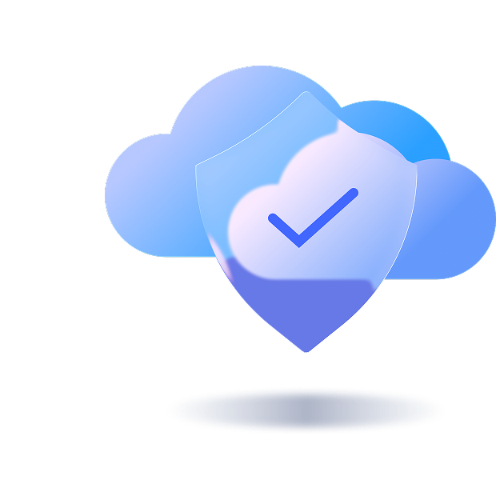

뷰노
의료 AI 솔루션 반응형 홈페이지
오늘의 완성을 넘어 내일의 운영으로.
리커너스는 일회성 제작에 그치지 않고, 장기적인 운영과 확장까지 고려한 단단한 비즈니스 아키텍처를 구축합니다.
많은 결과물은 오픈 직후에는 비슷해 보입니다.
하지만 시간이 지나 수정 요청이 생기고, 기능이 추가되고, 담당자가 바뀌고,
서비스가 확장되기 시작하면 처음 만든 구조의 차이가 드러납니다.
리커너스는 서비스가 ‘오픈’에서 끝나는 일이 아니라, 기업이 계속 활용하고
운영해야 하는 비즈니스 자산으로 바라봅니다.

단순히 화면을 빠르게 만드는 것이 아닌 수정과 확장,
운영까지 이어질 수 있는 구조를 설계합니다.
의료 AI 솔루션 반응형 홈페이지
통근버스 예약 모바일 어플리케이션 플랫폼
국내 스피커 산업의 선두주자
뮤지컬 컨텐츠 거래 웹솔루션
정신건강의학과의원 반응형 홈페이지
청소 중개 모바일 어플리케이션 플랫폼
사운드 AI 기업 반응형 홈페이지
리커너스의 프로젝트는 Notion을 통해 체계적으로 관리합니다. 업무 내용과 의사결정, 수정 요청을 기록하여 프로젝트의 흐름을 명확하게 유지합니다. 프로젝트에 소요되는 시간은 분 단위로 관리되며, 정확한 업무 파악을 바탕으로 효율적인 퍼포먼스를 만들어내며 수평적인 소통 문화는 다양한 아이디어를 이끌어내고, 결과물의 완성도를 높이는 기반이 됩니다.

홈페이지는 기업의 아이덴티티를 표현해야 하고, 서비스는 방향성과 가치를 함께 담아야 합니다. 브랜드부터 서비스까지의 이해 없이 진행되는 개발은 단편적인 결과물을 만들 수는 있지만, 사업의 핵심 가치를 제대로 전달하기 어렵습니다. 리커너스는 마케팅과 브랜딩, 콘텐츠, 운영까지 함께 이해하고 고려하며, 브랜드의 본질을 담은 서비스를 구현합니다.

좋은 서비스는 화면만으로 완성되지 않습니다. 속도와 보안, 배포, 확장성, 운영 안정성까지 함께 고려되어야 합니다. 리커너스는 AWS와 ECS 기반의 클라우드 환경을 구축하여 안정적인 성능과 운영 환경을 제공합니다. 기술과 운영을 함께 고려한 설계를 바탕으로, 안정적인 서비스 경험과 지속 가능한 운영을 지원합니다.
